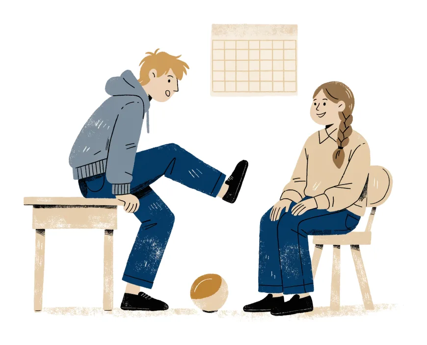
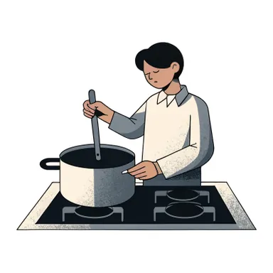
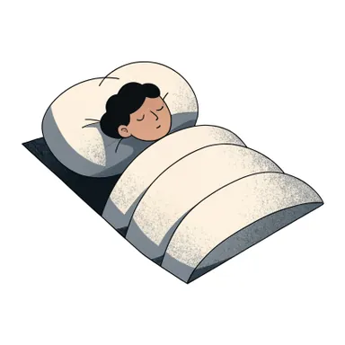
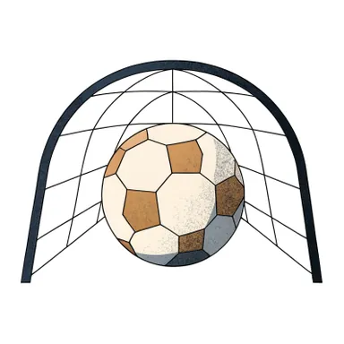
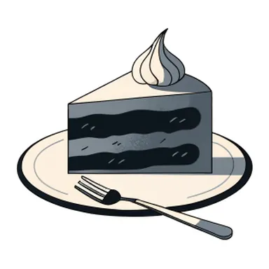
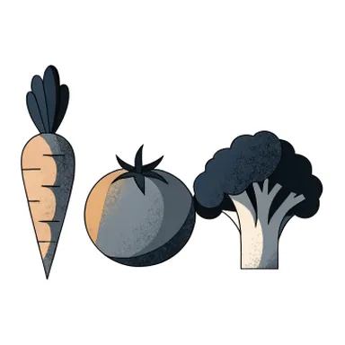

먼저 생각해 보세요.
Ich habe Fußball gespielt. 지난 일을 말하는 이 문장에서 gespielt는 어디에 있나요?
둘째 자리에는 habe가 오고, ge-가 붙은 gespielt는 맨 끝으로 가요.

월요일 아침이에요. 친구들이 주말에 한 일을 이야기해요.
눌러서 들어 보세요.
먼저 생각해 보세요.
Ich habe Fußball gespielt. 지난 일을 말하는 이 문장에서 gespielt는 어디에 있나요?
둘째 자리에는 habe가 오고, ge-가 붙은 gespielt는 맨 끝으로 가요.
Lektion 5의 낱말 다섯 개를 다시 떠올려 보세요.
문법 Perfekt mit haben, war, hatte, gestern, letzte Woche
이 과를 마치면 주말에 한 일과 그것이 어땠는지 독일어로 말할 수 있어요.
월요일 아침, 수업이 시작되기 전이에요.
들으면서 찾아보세요. Lukas는 토요일에 무엇을 했나요?
Yuna가 교실에 들어와요. 며칠 만에 학교에 왔어요.
들으면서 찾아보세요. Yuna는 일요일에 누구와 요리했나요?
두 대화를 듣고 답하세요.
Lukas는 토요일에 무엇을 했나요?
Emma hat am Wochenende ihre Oma besucht.
Was haben Emma und ihre Oma gegessen?
Yuna는 일요일에 누구와 요리했나요?
Der Film war spannend.
Aber er war langweilig. 영화는 지루했어요.
Elif는 어제 저녁에 무엇을 했나요?
낱말 27개예요. 낱말이나 예문 앞의 단추를 누르면 소리가 나요. 명사는 der, die, das를 색으로 구분했어요.
machen, hat gemacht 하다, 만들다
Was hast du gemacht?뭐 했어?
spielen, hat gespielt 놀다, (운동을) 하다
Ich habe Fußball gespielt.나는 축구를 했어요.
lernen, hat gelernt 배우다, 공부하다
Ich habe für den Test gelernt.나는 시험공부를 했어요.

kochen, hat gekocht 요리하다
Ich habe mit Thomas gekocht.나는 Thomas와 요리했어요.
kaufen, hat gekauft 사다
Emma hat eine Jacke gekauft.Emma는 재킷을 샀어요.
hören, hat gehört 듣다
Ich habe Musik gehört.나는 음악을 들었어요.
besuchen, hat besucht 찾아가다
Ich habe meine Oma besucht.나는 할머니를 뵈러 갔어요.
aufräumen, hat aufgeräumt 치우다
Ich habe mein Zimmer aufgeräumt.나는 방을 치웠어요.
sehen, hat gesehen 보다
Ich habe einen Film gesehen.나는 영화를 봤어요.
lesen, hat gelesen 읽다
Ich habe viel gelesen.나는 책을 많이 읽었어요.
essen, hat gegessen 먹다
Wir haben Kuchen gegessen.우리는 케이크를 먹었어요.
trinken, hat getrunken 마시다
Wir haben Tee getrunken.우리는 차를 마셨어요.

schlafen, hat geschlafen 자다
Ich habe lange geschlafen.나는 오래 잤어요.
treffen, hat getroffen 만나다
Ich habe Tim getroffen.나는 Tim을 만났어요.
gestern 어제
Gestern hatte ich keine Zeit.어제는 시간이 없었어요.
letzte Woche 지난주
Letzte Woche war ich krank.지난주에 나는 아팠어요.
war ~이었다, 있었다 (sein의 과거)
Wie war dein Wochenende?주말 어땠어?
hatte 가지고 있었다 (haben의 과거)
Sie hatte Fieber.그녀는 열이 있었어요.
lange 오래
Wir haben lange gespielt.우리는 오래 놀았어요.
wieder 다시
Yuna ist wieder gesund.Yuna는 다시 건강해요.
spannend 흥미진진한
Das Buch war spannend.그 책은 흥미진진했어요.
schlecht 나쁜, 별로인
Der Film war schlecht.그 영화는 별로였어요.
der Film, die Filme 영화
Der Film war lustig.그 영화는 재미있었어요.

das Spiel, die Spiele 경기, 놀이
Das Spiel war super.그 경기는 최고였어요.

der Kuchen, die Kuchen 케이크
Der Kuchen war lecker.그 케이크는 맛있었어요.

das Gemüse 채소
Ich esse gern Gemüse.나는 채소를 즐겨 먹어요.
das Ei, die Eier 달걀
Ich esse ein Ei.나는 달걀을 한 개 먹어요.
이 과의 낱말로 여덟 문제를 풀어요.
예문을 보고 답해 보세요.
spielen이 gespielt가 될 때 무엇이 붙었나요?
규칙
지난 일을 말할 때는 haben을 주어에 맞게 바꿔 둘째 자리에 두고, 동사를 과거분사로 바꿔 문장 맨 끝에 둬요. 과거분사는 보통 동사의 몸통 앞에 ge-, 뒤에 -t를 붙여 만들어요.
| 동사 | 과거분사 | 예문 |
|---|---|---|
| machen | gemacht | Ich habe Hausaufgaben gemacht. |
| spielen | gespielt | Wir haben Fußball gespielt. |
| lernen | gelernt | Er hat Deutsch gelernt. |
| hören | gehört | Ich habe Musik gehört. |
| kaufen | gekauft | Sie hat eine Jacke gekauft. |
주의 나뉘는 동사는 ge-가 가운데에 들어가요. aufräumen은 aufgeräumt, einkaufen은 eingekauft예요. be-로 시작하는 동사와 -ieren으로 끝나는 동사에는 ge-가 붙지 않아요. besuchen은 besucht, fotografieren은 fotografiert예요.
예문을 보고 답해 보세요.
essen의 과거분사 gegessen은 무엇으로 끝나나요?
규칙
자주 쓰는 동사 가운데에는 과거분사가 -en으로 끝나고 모음이 바뀌는 것이 있어요. 정해진 규칙이 없어서 동사와 함께 외워야 해요.
| 동사 | 과거분사 | 예문 |
|---|---|---|
| sehen | gesehen | Ich habe einen Film gesehen. |
| lesen | gelesen | Ich habe viel gelesen. |
| essen | gegessen | Wir haben Kuchen gegessen. |
| trinken | getrunken | Sie hat Tee getrunken. |
| schlafen | geschlafen | Er hat lange geschlafen. |
| treffen | getroffen | Ich habe Freunde getroffen. |
주의 낱말 목록에서 동사를 외울 때 lesen, hat gelesen처럼 과거분사를 함께 소리 내어 외우세요.
예문을 보고 답해 보세요.
sein과 haben으로 지난 일을 말할 때 쓴 형태는 무엇인가요?
규칙
sein과 haben은 지난 일을 말할 때 보통 war(~이었다, 있었다)와 hatte(가지고 있었다)를 써요. 과거분사 없이 이 한 낱말만 써요.
| sein | haben | |
|---|---|---|
| ich | war | hatte |
| du | warst | hattest |
| er, sie, es | war | hatte |
| wir | waren | hatten |
| ihr | wart | hattet |
| sie, Sie | waren | hatten |
주의 지난 때를 나타내는 말을 함께 써요. gestern(어제), gestern Abend(어제 저녁), am Wochenende(주말에), letzte Woche(지난주). 이런 말이 문장 맨 앞에 오면 동사가 바로 뒤에 와요. Gestern habe ich gelernt.
Elif가 Lukas에게 일요일에 한 일을 물어요. 듣고 답하세요.
Am Sonntag
Elif Lukas, was hast du am Sonntag gemacht?
Lukas Am Morgen habe ich lange geschlafen. Dann habe ich mit Lea Computerspiele gespielt.
Elif Und am Nachmittag?
Lukas Am Nachmittag habe ich Tim getroffen. Wir haben einen Film gesehen.
Elif Wie war der Film?
Lukas Er war lustig! Am Abend habe ich Hausaufgaben gemacht.
Lukas는 일요일 아침에 무엇을 했나요?
Lukas는 누구와 컴퓨터 게임을 했나요?
Wie war der Film?
Lukas는 숙제를 언제 했나요?
듣고 무엇을 했는지 고르세요.
Emma는 어제 무엇을 했나요?
Gestern habe ich eine Jacke gekauft.
Yuna는 주말에 무엇을 했나요?
Am Wochenende habe ich viel gelesen.
Lukas는 지난주에 무엇이 있었나요?
Letzte Woche hatte ich einen Mathetest.
Elif는 어제 저녁에 무엇을 먹었나요?
Gestern Abend haben wir Pizza gegessen.
Yuna가 쓴 일기예요. 읽고 답하세요.
Sonntag, 24. November
Heute war es schön. Am Morgen habe ich lange geschlafen. Dann habe ich meine Eltern angerufen.
Am Nachmittag habe ich mit Thomas gekocht. Wir haben Bibimbap gemacht. Sabine und Emma haben viel gegessen!
Am Abend habe ich Hausaufgaben gemacht und einen Film gesehen. Der Film war lustig.
Jetzt bin ich müde. Gute Nacht!
Yuna hat am Morgen Hausaufgaben gemacht.
Am Morgen habe ich lange geschlafen. 숙제는 저녁에 했어요.
Yuna는 누구에게 전화했나요?
Was hat Yuna mit Thomas gemacht?
Wie war der Film?
알맞은 과거분사를 고르세요.
Ich habe Fußball .
Wir haben Kuchen .
Hast du den Film ?
Emma hat ihre Oma .
Ich habe mein Zimmer .
Er hat lange .
haben의 알맞은 형태를 고르세요.
Ich Musik gehört.
Was du gemacht?
Lukas für den Test gelernt.
Wir Tee getrunken.
ihr eingekauft?
war와 hatte의 알맞은 형태를 고르세요.
Wie dein Wochenende?
Yuna Fieber.
Der Film langweilig.
Gestern ich keine Zeit.
Wir am Samstag im Kino.
du Hunger?
동사와 과거분사를 짝지으세요.
괄호 안의 동사를 과거분사로 바꿔 쓰세요.
Ich habe Fußball . (spielen)
Wir haben . (kochen)
Er hat Deutsch . (lernen)
Sie hat eine Mütze . (kaufen)
Ich habe Musik . (hören)
낱말을 순서대로 눌러 문장을 만드세요.
나는 축구를 했어.
뭐 했어?
일요일에 나는 요리했어.
주말 어땠어?
듣고 그대로 써 보세요.
Wie war dein Wochenende? 주말 어땠어?
Was hast du gemacht? 뭐 했어?
Es war sehr lecker. 아주 맛있었어.
Wie war dein Wochenende? 주말 어땠어?
Was hast du gemacht? 뭐 했어?
Und am Sonntag? 일요일에는?
Ich habe Fußball gespielt. 축구를 했어.
Ich habe einen Film gesehen. 영화를 봤어.
Ich habe meine Oma besucht. 할머니를 뵈러 갔어.
Ich hatte keine Zeit. 시간이 없었어.
Es war super! 최고였어!
Es war langweilig. 지루했어.
Der Film war spannend. 영화가 흥미진진했어.
Das Essen war lecker. 음식이 맛있었어.
대화 A에서 역할을 하나 고르세요. 상대의 말은 음성으로 나오고, 내 차례에는 직접 말해요.
토요일과 일요일에 한 일, 주말이 어땠는지 적으세요. 한 일은 과거분사를 맨 끝에 써요. 완성된 문장을 소리 내어 읽어 보세요.
Am Samstag habe ich Fußball gespielt.
Am Sonntag habe ich einen Film gesehen.
Mein Wochenende war super.
Mein Wochenende
지난 주말에 한 일을 일기처럼 써 보세요. 다섯 문장쯤 써요.
Am Samstag habe ich lange geschlafen. Dann habe ich mit Mina Fußball gespielt. Am Abend haben wir Pizza gegessen. Am Sonntag habe ich für den Test gelernt und einen Film gesehen. Der Film war spannend. Mein Wochenende war super!
다 쓴 뒤에 확인해 보세요.
Ich kann sagen, was ich am Wochenende gemacht habe.주말에 한 일을 말할 수 있어요.
Ich kann sagen, wie etwas war.그것이 어땠는지 말할 수 있어요.
Ich kann Fragen über gestern stellen.지난 일을 물을 수 있어요.